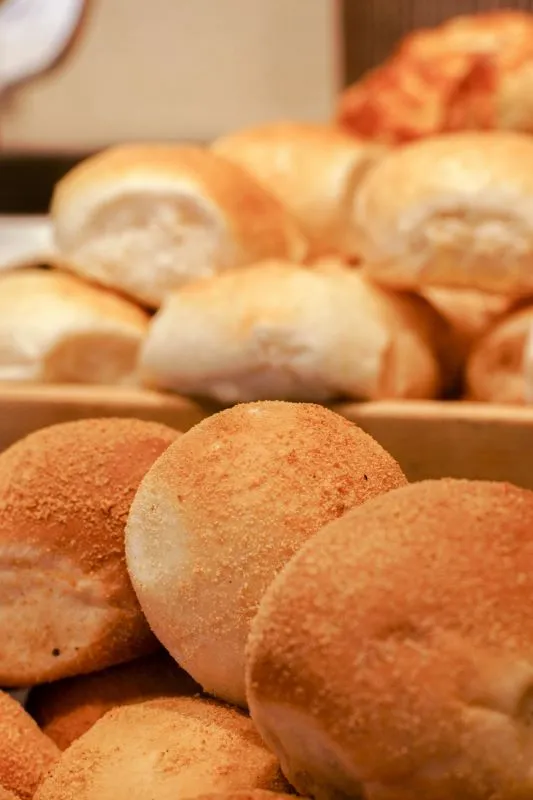
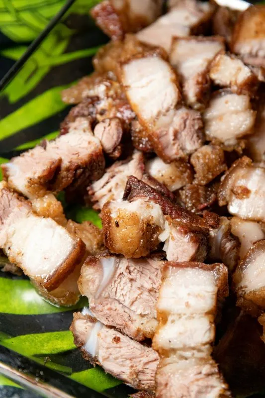
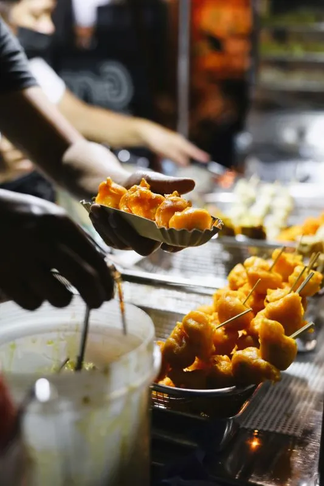

Mabuhay!
Enjoy the warmth and richness of Filipino cuisine, where every dish tells a story of tradition, family, and community. Take a second and set out on a flavorful journey through the heart of the Philippines.
Explore CuisineData
| Area: | 300,000 km² |
| Population: | ~113 million |
| Capital: | Manila |
| Languages: | Filipino, English |
| Currency: | Philippine Peso (PHP) |
| Time Zone: | PHT, UTC+8 |
| Calling Code: | +63 |
| Internet TLD: | .ph |
Weather
| Temperature: | -- °F |
| Conditions: | Clear Skies |
| Wind: | -- mph |
| Wind Chill: | -- °F |

Pandesal
A soft, slightly sweet bread roll, best enjoyed with coffee or hot chocolate.

Liempo
Grilled pork belly, marinated in rich flavors, served with a side of vinegar dip.

Kwek-Kwek
Deep-fried quail eggs coated in an orange batter, a popular street food delight.